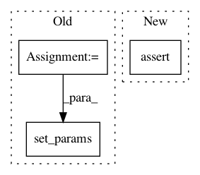

0822118b414e74037e251002d9c870a03d33190e,art/attacks/evasion/adversarial_patch/adversarial_patch_numpy.py,AdversarialPatchNumpy,__init__,#AdversarialPatchNumpy#Any#Any#Any#Any#Any#Any#Any#Any#,58
Before Change
if not isinstance(classifier, ClassifierNeuralNetwork) or not isinstance(classifier, ClassifierGradients):
raise ClassifierError(self.__class__, [ClassifierNeuralNetwork, ClassifierGradients], classifier)
kwargs = {
"target": target,
"rotation_max": rotation_max,
"scale_min": scale_min,
"scale_max": scale_max,
"learning_rate": learning_rate,
"max_iter": max_iter,
"batch_size": batch_size,
}
self.set_params(**kwargs)
self.patch = None
def generate(self, x, y=None, **kwargs):
After Change
Generate adversarial samples and return them in an array.
:param x: An array with the original inputs. `x` is expected to have spatial dimensions.
:type x: `np.ndarray`
:param y: An array with the original labels to be predicted.
:type y: `np.ndarray`
:return: An array holding the adversarial patch.
:rtype: `np.ndarray`
In pattern: SUPERPATTERN
Frequency: 3
Non-data size: 3
Instances
Project Name: IBM/adversarial-robustness-toolbox
Commit Name: 0822118b414e74037e251002d9c870a03d33190e
Time: 2020-03-30
Author: beat.buesser@ie.ibm.com
File Name: art/attacks/evasion/adversarial_patch/adversarial_patch_numpy.py
Class Name: AdversarialPatchNumpy
Method Name: __init__
Project Name: IBM/adversarial-robustness-toolbox
Commit Name: 573314f4b6377764d40f9514cd89f835bf191ee4
Time: 2020-03-30
Author: beat.buesser@ie.ibm.com
File Name: art/attacks/evasion/adversarial_patch/adversarial_patch_numpy.py
Class Name: AdversarialPatchNumpy
Method Name: __init__
Project Name: markovmodel/PyEMMA
Commit Name: 4a8d4b647b79b5d0cea572d5951395bf98ba97c8
Time: 2017-11-28
Author: m.scherer@fu-berlin.de
File Name: pyemma/_base/serialization/serialization.py
Class Name: SerializableMixIn
Method Name: __setstate__